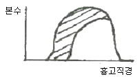
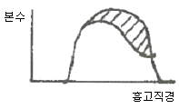

산림산업기사 (2013-03-10 기출문제)
1과목: 조림학
1. 묘목의 식재요령에 대한 설명으로 맞는 것은?
- 교통이 불편한 곳일수록 묘목을 소식한다.
- 땅이 비옥하고 성장 속도가 빠르면 밀식한다.
- 일반적으로 양수는 밀식한다.
- 소나무처럼 피해를 많이 받는 수종은 소식한다.
(정답률: 55%)

2. 산벌작업의 3단계를 바르게 묶어 놓은 것은?
- 산벌, 개벌, 택벌
- 예비벌, 하종벌, 후벌
- 초벌, 중벌, 종벌
- 정지벌, 무육벌, 성숙벌
(정답률: 94%)
3. 다음 목본식물내 지질의 종류 가운데 수목의 2차대 사물질인 isoprenoid 화합물이 아닌 것은?
- 고무
- 수지
- terpenes
- lignin
(정답률: 50%)
4. 가지치기의 설명으로 옳은 것은?
- 역지 이상부의 가지는 끊어도 된다.
- 활엽수 가지치기에서 가지의 직경이 5cm 이상이 되어도 반드시 가지치기를 한다.
- 가지가 나무 줄기와 직각으로 붙어 있는 것의 가지치기는 절단면의 줄기에 평행하도록 하고, 이 때 줄기의 껍질을 벗기는 일이 없도록 한다.
- 가지의 기부가 굵은 활엽수의 가지치기를 실시할 경우 지융부는 남겨두지 않는다.
(정답률: 84%)
5. 테트라졸륨 테스트(TTC Test)는 다음 중에서 어디에 사용되는 방법인가?
- 종자의 발아 촉진 처리방법
- 화아분화 촉진 처리방법
- 종자의 발아력 검정방법
- 삽수의 발근 촉진 처리방법
(정답률: 79%)
6. 종자의 활력 검정방법(Viability test method)이 아닌 것은?
- 절단법
- X-선법
- 효소검출법
- 양건법
(정답률: 71%)
7. Moller는 항속림 사상을 주장하였다. 다음에서 해당 하지 않는 것은?
- 항속림은 동령순림이다.
- 지표 유기물을 잘 보존한다.
- 천연갱신을 원칙으로 한다.
- 단목택벌을 원칙으로 한다.
(정답률: 62%)
8. 1.8m X 1.8m의 정방형 식재를 할 때 ha 당 소요되는 묘목의 본수는?
- 3086본
- 3776본
- 5132본
- 2887본
(정답률: 89%)
9. 노천매장법과 관련된 내용 설명으로 틀린 것은?
- 봄에 파종하면 이듬해 봄에 발아하는 들메나무, 목련류의 종자에 적용한다.
- 땅속 50~100cm 깊이에 모래와 섞어 묻어 둔다.
- 겨울에는 눈이나 빗물이 스며들지 않도록 한다.
- 종자의 후숙을 도와 발아를 촉진시키도록 한다.
(정답률: 76%)
10. 중림작업법에 대한 설명으로 틀린 것은?
- 교림과 왜림을 동일 임지에 함께 세워서 경영하는 작업법이다.
- 하목으로서의 왜림은 맹아로 갱신되며 일반적으로 연료재와 소경재를 생산한다.
- 상목으로서의 교림은 일반용재로 생산할 수 없다.
- 일반적으로 하층목은 개벌되고 맹아갱신을 반복 한다.
(정답률: 77%)
11. 풀베기작업에서 모두베기 방법을 적용하는 것이 가장 바람직한 조림지는?
- 1ha에 200본이 식재된 호두나무 조림지
- 한풍해가 심한 조림지
- 소나무 밀식 조림지
- 전나무 소식 조림지
(정답률: 77%)
12. 임목의 잎에 있는 엽록체가 주로 흡수하여 광합성에 이용하는 광선은?
- 적외선
- 근적외선
- 자외선
- 가시광선
(정답률: 90%)
13. 소나무 종자 1kg에 대한 협잡물이 0.1kg이고, 발아율이 88%인 경우 그 효율은?
- 79.2%
- 84.7%
- 76.7%
- 81.8%
(정답률: 64%)
14. 느티나무, 아까시나무에 알맞은 파종법은?
- 점파
- 조파
- 산파
- 상파
(정답률: 68%)
15. 묘포에서 늦어도 7월 이전에 비료를 주어야 하는 가장 주된 이유는?
- 생장기가 짧기 때문이다.
- 비료를 흡수할 시간적 여유가 없기 때문이다.
- 늦게까지 자라게 되어 월동기에 동해를 받기 때문이다.
- 장마철에 비료분의 유실이 심하기 때문이다.
(정답률: 71%)
16. 다음 중 줄기를 해부했을 때 환공제로 특징되는 수종은?
- 참나무
- 단풍나무
- 포플러
- 호두나무
(정답률: 43%)
17. 다음은 Hawley의 4가지 간벌법이다. 이 중 기계적 간벌을 뜻하는 그림은? (단, 모두 동령림이며, 빗금친 부분은 간벌예정이다.)




(정답률: 87%)
18. 우리나라 산림에서 적용하는 지위지수(site index)를 올바르게 설명한 것은?
- 일정한 수령을 기준으로 하여 그때의 흉고직경의 평균치로 결정한다.
- 일정한 수령을 기준으로 하여 그때의 흉고직경으로 결정한다.
- 일정한 수령을 기준으로 하여 그때의 재적으로 결정한다.
- 일정한 수령을 기준으로 하여 그때의 수고로 결정한다.
(정답률: 70%)
19. 죽림을 조성 하는데 사용되는 번식재료로 가장 적당한 것은?
- 죽간
- 종자
- 지하경
- 지엽부
(정답률: 58%)
20. 다음 수종 가운데 풍매화가 아닌 것은?
- 호두나무
- 자작나무
- 포플러류
- 피나무
(정답률: 58%)
2과목: 산림보호학
21. 소나무좀의 방제법으로 적합하지 않는 것은?
- 이목의 박피
- 등화 유살법
- 기생성 천적 보호
- 각종 피해목 제거
(정답률: 76%)
22. 아밀라리아 뿌리썩음병균이 수목의 뿌리를 침해하는 형태는?
- 소생자
- 담자포자
- 녹파자
- 근상균사속
(정답률: 52%)
23. 병든 가지나 줄기에서 잎이 나오기 전에 잘라 소각하여 방제 효과를 얻을 수 있는 병은?
- 포플러 잎녹병
- 오리나무 갈색무늬병
- 벚나무 빗자루병
- 오동나무 탄저병
(정답률: 44%)
24. 번데기로 월동하는 해충은?(문제 오류로 보기 내용이 없습니다. 정확한 보기 내용을 아신는 분께서는 오류 신고를 통하여 내용 작성 부탁 드립니다. 정답은 1번입니다.)
- 복원중
- 복원중
- 복원중
- 복원중
(정답률: 74%)
25. 임지에 쌓여있는 악엽과 지피물, 갱신치수 및 지상 관목 등이 타는 삼림화재의 종류는?
- 지중화
- 지표화
- 수관화
- 수간화
(정답률: 86%)
26. 병원체가 기주의 생체내에서만 잠재해서 월동하는 것은?
- 잣나무 털녹병균
- 밤나무 줄기마름병균
- 오리나무 갈색무늬병균
- 뿌리혹병균(근두암종병균, crown gall)
(정답률: 39%)
27. 다음 중 해충의 기계적 구제방법이 아닌 것은?
- 차단법
- 포살법
- 등화유살법
- 천적이용법
(정답률: 78%)
28. 다음 중 볕데기(sun-scorch)에 비교적 저항성인 수종은?
- 오동나무
- 버즘나무
- 굴참나무
- 호두나무
(정답률: 80%)
29. 파이토플라스마에 의한 수병이 아닌 것은?
- 대추나무 빗자루병
- 뽕나무 오갈병
- 오동나무 빗자루병
- 밤나무 잉크병
(정답률: 75%)
30. 토양 중에서 월동하는 병원균은?
- 잣나무 털녹병균
- 밤나무 줄기마름병균
- 파이토플라스마 빗자루병균
- 묘목의 잘록병균(모잘록병균)
(정답률: 73%)
31. 나무줄기를 1~2m 로 잘라 임내에 놓아두고 이에 산란을 유도한 다음, 후에 이를 제거해 소각하는 통나무유살법은 다음의 어느 곤충을 구제하기 위한 것인가?
- 솔잎혹파리
- 소나무좀
- 미류재주나방
- 밤바구미
(정답률: 61%)
32. 우리나라에 서식하고 있는 포유류 중 천연기념물이 아닌 것은?
- 하늘다람쥐
- 표범
- 물범
- 산양
(정답률: 72%)
33. 병원균의 잠복기에 대한 설명으로 옳은 것은?
- 포자가 잎 위에 떨어져 병징이 나타날 때까지의 소요되는 기간
- 포자가 바람에 날릴 때부터 감염이 이루어질 때까지의 소요되는 기간
- 병원체의 침입에서부터 초기병징이 나타나는 발병까지 소요되는 기간
- 병징이 나타난 직후부터 고사할 때까지의 소요되는 기간
(정답률: 85%)
34. 침투성 살충제의 설명으로 맞는 것은?
- 입을 통하여 약제가 소화관내에 들어가 중동을 일으켜 곤충을 죽이는 약제
- 식물체의 뿌리, 줄기, 잎 등에 흡수시켜 이를 흡즙하는 곤충을 죽이는 약제
- 기체성의 약제가 기문을 통하여 체내에 들어가 곤충을 질식사시키는 약제
- 곤충이 작물에 접근하는 것을 방해하는 약제
(정답률: 61%)
35. 연해의 지표식물로 적합하지 않은 것은?
- 은행나무
- 소나무
- 밤나무
- 이끼류
(정답률: 46%)
36. 해충의 개체군 동태를 알기 위해서는 충태별 사망수, 사망요인, 사망률 등의 항목으로 구성된 표를 많이 이용하고 있다. 이 표의 이름은?
- 생명표
- 수확표
- 생식표
- 수명표
(정답률: 72%)
37. 솔잎혹파리의 방제법으로 가장 적합한 것은?
- 주로 잎을 가해하는 유충일 때 잎에 살충제를 살포하여 구제하는 것이 효과적이다.
- 피해목은 11월 이후에 벌채하여 제거한다.
- 천적인 마름무늬매미충을 이용한다.
- 유충낙하기에 이들을 포식하는 박새, 쑥새 등의 포식조류를 보호한다.
(정답률: 48%)
38. 소나무좀의 신성충이 가해하는 곳은?
- 수간
- 잎
- 새가지
- 솔방울
(정답률: 71%)
39. 모잘록병을 일으키는 주요 병원균이 아닌 것은?
- Rhizoctonia solani
- Pythoum debaryanum
- Fusarium acuminatum
- Taphrina wiesneri
(정답률: 56%)
40. 솔껍질깍지벌레를 방제하기 위하여 포스팜액제를 수간주사하는 시기는?
- 3월
- 6월
- 9월
- 12월
(정답률: 39%)
3과목: 임업경영학
41. 임목 원가라고도 하며, 간벌 이전의 유령 임목에 대한 가격산정에 한하여 적용할 수 있는 것은?
- 임지 기망가
- 임목 기망가
- 임목 비용가
- 임지 비용가
(정답률: 72%)
42. 측고기를 이용하여 수고를 측정할 때, 주의하여야 할 사항으로 틀린 것은?
- 측정위치는 측정하고자 하는 나무의 정단과 밑이 잘 보이는 지점을 선택하여야 한다.
- 측정위치는 가능하면 나무의 높이보다 가까운 거리에 정하는 것이 오차를 줄일 수 있는 방법이다.
- 경사진 곳에서는 오차가 생기기 쉬우므로 가능하면 동일한 높이의 위치에서 측정한다.
- 측고기의 종류에 따라 사용 방법이 다르기 때문에 측고기 사용법을 숙지하는 것이 하나의 오차를 줄일 수 있는 방법이다.
(정답률: 83%)
43. 감가상각액의 계산법 중 직선법이라고도 하며, 가장 간단하고 보편적인 감가계산법은?
- 연수합계법
- 정액법
- 정률법
- 생산량비례법
(정답률: 83%)
44. 명목적 임업이율(r)이 15%이고, 과거의 물가등귀율을 참고할 때 앞으로의 일반물가등귀율(s)을 약 10%로 예측한다면, 실질적 임업이율(P)은?
- 약 3%
- 약 4%
- 약 5%
- 약 6%
(정답률: 64%)
45. 산림평가에 사용되는 임업이율의 성격과 거리가 먼 것은?
- 대부이자가 아니고 자본이자이다.
- 현실이율이 아니고 평정이율이다.
- 단기이율이 아니고 장기이율이다.
- 명목적 이율이 아니고 실질적 이율이다.
(정답률: 74%)
46. 산림경영이 효율적이고 합리적으로 운영될 수 있도록 경영계획에서의 삼림구획 순서로 맞는 것은?
- 경영계획구→소반→임반
- 임반→경영계획구→소반
- 소반→임반→경영계획구
- 경영계획구→임반→소반
(정답률: 62%)
47. 국유림경영계획을 위한 지황조사에 대한 설명으로 틀린 것은?
- 방위는 8방위로 구분한다.
- 경사도에서 험준지는 25~30°미만을 말한다.
- 지위지수는 상, 중, 하로 구분한다.
- 임도에서 도로까지 450m인 경우 4급지로 표시한다.
(정답률: 62%)
48. 임반을 구획하고 임반번호를 부여하는 방법으로 맞는 것은? (단, 보조 임반을 편성할 경우는 제외)
- 경영계획구 유역 하류에서 시계방향으로 연속되게 아라비아숫자로 표기한다.
- 경영계획구 유역 하류에서 시계 반대방향으로 연속되게 아라비아숫자로 표기한다.
- 경영계획구 산봉부터 산록으로 연속되게 아라비아 숫자를 부여한다.
- 임반번호의 표시방법이나 부여방향 등은 전적으로 평성자의 의사에 달렸다.
(정답률: 62%)
49. 소나무 임분에서 윤벌기 이상의 경제성 있는 임목의 재적이 500m3/ha이고 이 임분의 총 산림생장량이 5m3/ha, 미래 임분에 적용할 윤벌기 연수가 50년이라고 할 때 이 임분의 연간 벌채량을 핸즈릭(Hanzlik) 공식법에 의해 구하면 얼마인가?
- 10m3/ha
- 15m3/ha
- 20m3/ha
- 25m3/ha
(정답률: 34%)
50. 임분의 초기 재적에 대한 순생장량 계산 공식은? (단, V1는 초기의 임목재적, V2는 말기의 임목재적, M는 고사량, C는 벌채량, I는 진계생장량이다)
- V2 + M + C - I - V1
- V2 + C - V1
- V2 + C - I - V1
- V2 - V1
(정답률: 45%)
51. 하가측고기로 기계를 적절히 조정한 후 입목의 최상층부를 측정한 결과 18m, 최하단ㄷ부를 측정한 결과 2m로 측정되었다. 이 입목의 수고는 얼마인가?
- 22m
- 20m
- 18m
- 14m
(정답률: 71%)
52. 자료가 많은 경우나 정확도를 요구할 때 사용되는 수고곡선 유도방법은?
- 이동평균법
- 자유곡선법
- 드라우트법
- 최소자승법
(정답률: 58%)
53. 금년도 간벌 수입으로 10,000원의 순이익을 얻었다고 하고 연이율 5%로 하여 20년 후의 후가는 얼마 인가? (단, 1.⑤20 = 2.6533)
- 25,000원
- 26,533원
- 27,033원
- 3,769원
(정답률: 78%)
54. 임업자본 중에서 유동자본에 해당하는 것은?
- 벌목기구
- 조림비
- 임도
- 제재소 설비자본
(정답률: 76%)
55. 임목의 평가방법에 대한 분류 중 비교방식에 해당 하며, 간접적 평가방법인 것은?
- 비용가법
- 시장가역산법
- 기망가법
- 순수익법
(정답률: 65%)
56. 감가상각비의 계산 방법 중 자산의 감가가 단순히 시간의 경과에 따라 나타나는 것이 아니라 사용정도에 비례하여 나타난다는 것을 전제로 하여 계산 하는 방법은?
- 작업시간 비례법
- 생산량 비례법
- 연수 합계법
- 정액법
(정답률: 62%)
57. 기계톱을 50만원에 구입하였다. 이 톱의 내용연수는 3년, 폐기시의 잔존가치를 5만원이라 하면 감가상각비는 얼마인가?
- 5만원
- 10만원
- 15만원
- 20만원
(정답률: 85%)
58. 투자의 상대적 유이성을 판단하는 기준을 투자효율 이라고 하는데, 투자효율의 결정방법이 아닌 것은?
- 회수기간법
- 투자이익율법
- 임의가치법
- 수익·비용율법
(정답률: 64%)
59. 임업경영에서 조림수종 선택 시 유의사항으로 틀린 것은?
- 조림수종 선정시 향토수종 중에서 주수종을 선택 할 것
- 일시에 새로운 수종을 대량으로 변경하지 말 것
- 조림기술에 맞는 수종을 선택할 것
- 각 임지에 적합한 단일 수종만을 선택할 것
(정답률: 81%)
60. 임지가망가(Bu)에 영향을 주는 인자에 대한 설명으로 틀린 것은?
- 주벌수익과 간벌수익의 값은 항상 플러스이므로 이 값이 클수록 Bu가 커진다.
- 조림비와 관리비의 값은 마이너스이므로 이 값이 클수록 Bu가 작아진다.
- 이율이 높으면 높을수록 Bu가 커진다.
- 벌기는 보통 높아지면 Bu는 처음에는 그 값이 증대하다가 어느 시기에 가서 최대에 도달하고, 그 후부터는 점차 감소한다.
(정답률: 70%)
4과목: 산림공학
61. 강선에 의한 집재작업의 특징으로 부적합한 것은?
- 재료구득과 설치가 용이하다.
- 사용수명이 길다.
- 지형의 제약을 적게 받는다.
- 대경 장재의 집재에 적합하다.
(정답률: 57%)
62. 비탈면의 안정해석방법에 이용하는 안전율은 흙의 무엇을 현재의 전단응력으로 나눈 값인가?
- 함수율
- 함수비
- 전단강도
- 인장응력
(정답률: 61%)
63. 소실수량에 대한 설명으로 맞는 것은?
- 소비수량이라고도 하며 강수량에서 증발산량을 뺀 수량과 같다.
- 소비수량이라고도 하며 증발산량과 유출량을 합한 것과 같다.
- 증발산량과 같으며 강수량에서 유출량을 뺀 값과 같다.
- 강수량과 유출량을 합한 값을 말한다.
(정답률: 60%)
64. 사방댐의 시공목적이 잘못 설명된 것은?
- 계상물매의 완화
- 유출토사의 억제 및 조절
- 물을 저장하여 수자원 증가
- 산각 고정
(정답률: 73%)
65. 다음 중 특수비탈안정공법(보강공법)이 아닌 것은?
- 앵커박기공법
- 약액주입공법
- 콘크리트뿜어붙이기공법
- 말뚝공법
(정답률: 45%)
66. 임도 기계화 시공에서 수중굴착 및 구조물의 기초 바닥 등과 같은 상당히 깊은 범위의 굴착과 호퍼(hopper)작업에 적당한 셔블(shovel)계 기계는?
- 드랙라인
- 크레인
- 크램셀
- 파워셔블
(정답률: 70%)
67. 일반적인 임업에 사용되는 트랙터에서 차체가 굴절되는 트랙터를 사용하는 이유는?
- 기계의 안정성을 도모하기 위하여
- 회전반경을 줄이기 위하여
- 제작비를 절감하기 위하여
- 기계의 구조를 간단하게 하기 위하여
(정답률: 80%)
68. 집재하고자 하는 위치를 원격으로 조종하는 것은?
- URUS I 집재기
- Loller 300 집재기
- 라디캐리 집재기
- 모노캐이블 집재기
(정답률: 48%)
69. 막쌓기라고도 하며 견치돌이나 큰 들돌을 사용할 수 있으므로 산림토목공사에서 흔히 사용하는 돌쌓기 공법은?
- 찰쌓기
- 메쌓기
- 골쌓기
- 켜쌓기
(정답률: 49%)
70. 수로의 횡단면적이 18m2이고, 매 초당 수로횡단면을 통과하는 유량이 72m3/s일 때 평균 유속은?
- 0.25m/s
- 0.5m/s
- 2.0m/s
- 4.0m/s
(정답률: 70%)
71. 임도밀도의 의미를 나타낸 것은?
- ha 당 임도의 전체 넓이
- ha 당 임도의 길이
- ha 당 임도의 개소수
- ha 당 임목 축적에 따른 임도길이
(정답률: 42%)
72. 작업공정표 작성시 작업시간에 계산되지 않는 사항은?
- 준비시간, 휴식시간
- 실 작업시간
- 출근 시간
- 감독관의 지시를 받는 시간
(정답률: 68%)
73. 임지가 결빙되었을 경우 임목수확작업 시 장점으로 틀린 것은?
- 토양의 견밀도 증가로 습한 지역에서의 작업이 용이하다.
- 토양의 표면마찰이 작아 집·운재작업이 용이하다.
- 작업은 용이하지만 임지의 훼손은 크다.
- 마찰저항의 저하로 작업의 부하가 경감된다.
(정답률: 57%)
74. 임도를 개설함으로서 발생되어지는 문제점이라고 할 수 없는 것은?
- 임지붕괴 및 토사유출의 원인이 유발되어질 가능성이 높다.
- 절개지와 성토지의 노출 등으로 인한 자연경관의 파괴가 우려된다.
- 임도개설로 인한 지역의 산림 및 인접 산림의 무분별한 개발이 초래될 수 있다.
- 임도로 인한 임업생산과 임지면적의 감소를 초래한다.
(정답률: 72%)
75. 임도의 시공에 있어서 사면의 안정을 위해서는 토사의 안식각이 매우 중요하다. 다음 중 안식각에 대한 설명으로 가장 적합한 것은?
- 경사면에서 물매(경사)가 점차 완만해져 어느 각도에 이르면 영구히 안정을 이루는데 이때 수평면과 비탈면이 이루는 각을 말한다.
- 경사면상의 임목에 의해 슬라이딩(미끄러짐)이 발생하여 그 물매(경사)가 어느 정도의 세월이 흐르고 나면 일정한 각도에 이르게 되는데 이때의 각을 말한다.
- 임도의 시공에서 인력에 의한 절·성토사면이 이루는 안식각은 임도의 시공 후 10년이 경과 되었을 때 이루는 각을 말한다.
- 경사면에서 내부의 힘에 의해 발생되어지는 슬라이딩(미끄러짐)이 계속 진행되고 난후에 어느 일정기간이 지나고 난 후 측정한 각을 말한다.
(정답률: 73%)
76. 쇄석도(부순돌길)의 노체 표준 두께로 가장 적당한 것은?
- 20cm
- 40cm
- 60cm
- 80cm
(정답률: 54%)
77. 임목의 벌목 및 조재용 장비가 아닌 것은?
- 하베스터
- 벨러번처
- 트리펠러
- 굴착기
(정답률: 79%)
78. 산각이나 계류의 양안을 유수의 침식으로부터 보호하기 위해 설치하는 공작물은?
- 구곡막이
- 바닥막이
- 기슭막이
- 수제
(정답률: 57%)
79. 벌목과 운재작업에서 작업조직을 편성하는 경우에 유의하여야 할 사항과 거리가 먼 것은?
- 노동의 안전화
- 노동강도의 경감화
- 노동생산의 극대화
- 작업기간의 단축화
(정답률: 66%)
80. 물이 지표면에서 토층 중으로 스며드는 현상은?
- 침투
- 투수
- 저류
- 차단
(정답률: 62%)